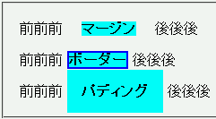
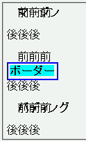

インラインレベル要素に対してマージン、ボーダー、パディングのいずれかを設定するとボックスの位置がずれてしまう。
<style type="text/css">
span {
background: aqua;
font-weight: bold;
}
</style>
<p>前前前
<span style="margin:1em;">マージン</span>
後後後</p>
<p>前前前
<span style="border:2px solid blue;">ボーダー</span>
後後後</p>
<p>前前前
<span style="padding:1em;">パディング</span>
後後後</p>
前前前 マージン 後後後
前前前 ボーダー 後後後
前前前 パディング 後後後
それぞれのプロパティを指定した場合の、表示上の違いを比べています。
N7.1での表示
NN4.8での表示
マージンまたはパディングを設定したときにインラインレベル要素が上にずれるバグは、その要素にボーダーも指定することで回避できます。ただし、要素の前後に改行が入るバグは回避できません。
NN4.8で不具合の発生を確認しました。